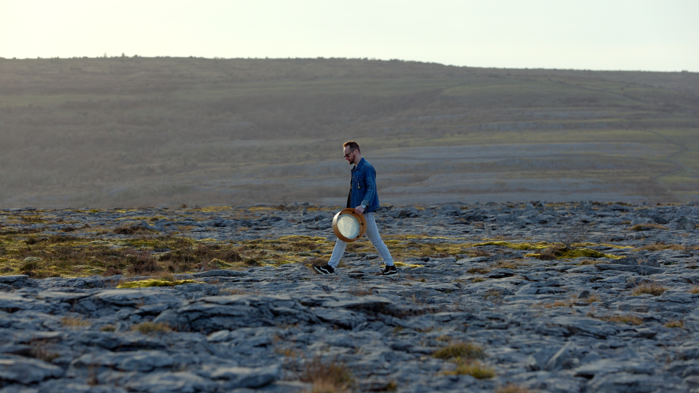
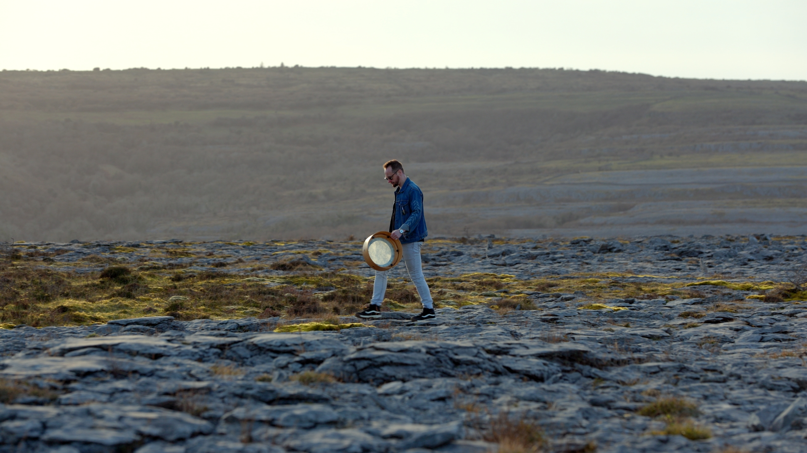
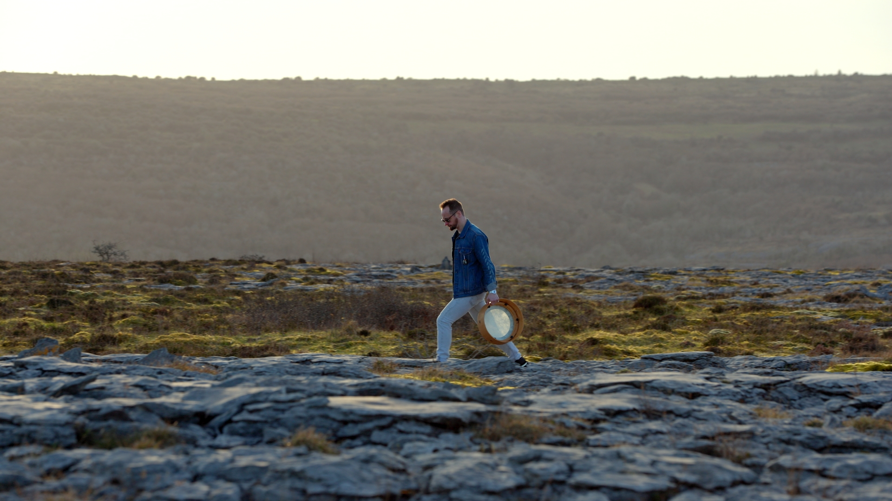

Deep Tradition Meets Modern Groove
Online bodhrán education rooted in the heart of the Burren—alongside live Zoom improver sessions, studio playalongs, and remote percussion recording.

Online bodhrán education rooted in the heart of the Burren—alongside live Zoom improver sessions, studio playalongs, and remote percussion recording.
Self-Paced Online Course on Teachable
From my roots at age six in County Clare to collaborating across traditional and contemporary settings—with The Kilfenora Céilí Band, Dónal Lunny, Hermitage Green, Nick Mulvey, and U2—my mission has always been simple: breathe life into the beat and make the music bounce.
This course takes the soul-stirring traditions of Clare and blends them with driving, syncopated modern grooves—using a see-through drumhead and side-camera angles so you can see exactly how the back hand shapes every pitch bend.
Watch Course Preview & Enroll →
What You'll Master
01 • Visual Clarity
Through a see-through drumhead and dedicated side-camera angles, see exactly how back-hand pressure and placement shape your tone in real time.
02 • Global Groove
Master the internal "lift" of jigs and reels while adapting your playing for rock, pop, and world music with backbeats and kick-drum low end.
03 • Play Along
Practice alongside master fiddle player Tara Breen with dedicated, controlled-speed playalong tracks tailored to each dance tune.
Course Outline
Progress step by step from your first stroke to genre-blending articulation.
Phase 1
Bodhrán beginnings, unlocking tone, incorporating accents, reel motor rhythm, and warm-ups.
Phase 2
Jigs, building fluidity, waltz grooves, polkas, slip jigs, and hornpipes with playalong tracks.
Phase 3
Single-ended rolls, double-ended rolls, and musical application inside real tunes.
Phase 4
High harmonics, low-end kick tones, dialing up the backbeat, and New Orleans 2nd line swung reels.



Live Online Coaching
Interactive live sessions for players ready to push their timing, phrasing, and groove. Every tier includes full Zoom replays so you can join from any time zone.
Once a Month
A focused deep-dive workshop each month exploring a specific rhythm, tune type, or accompaniment approach.
Ongoing Weekly
Consistent weekly sessions to build speed, repertoire, and musical confidence alongside a dedicated group.
Structured Cohort
A capped-size, 6-week guided course with a clear syllabus and direct personal feedback to transform your playing.
High-resolution bodhrán sample packs for producers and controlled-speed playalong tracks for students are currently being finalized in the studio. Join the newsletter for first access when the Samply page launches.


For Artists, Producers & Composers